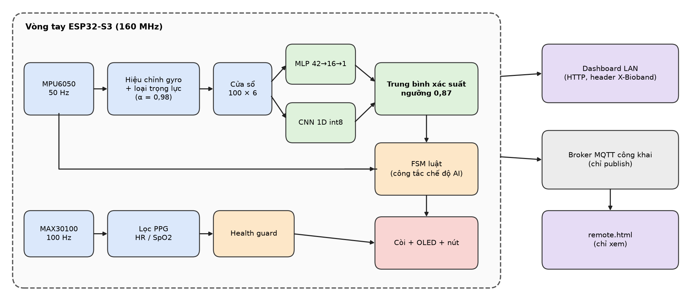
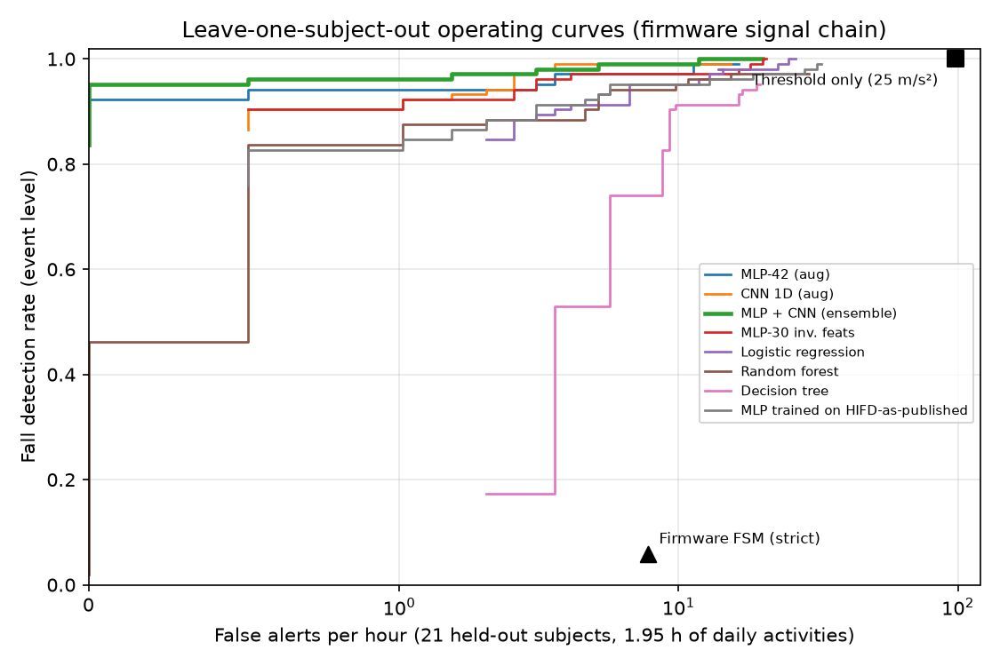
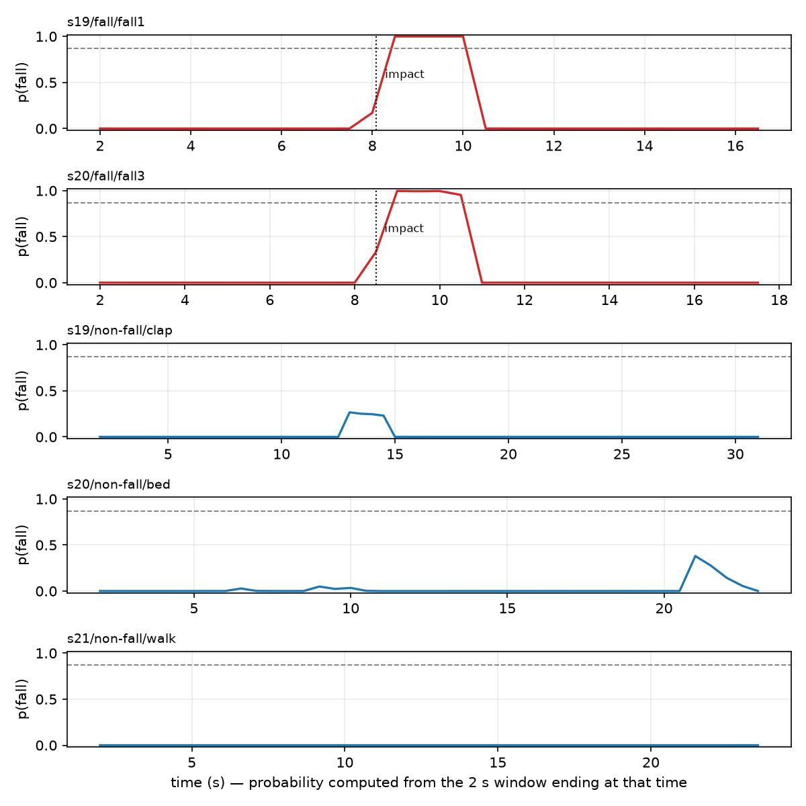
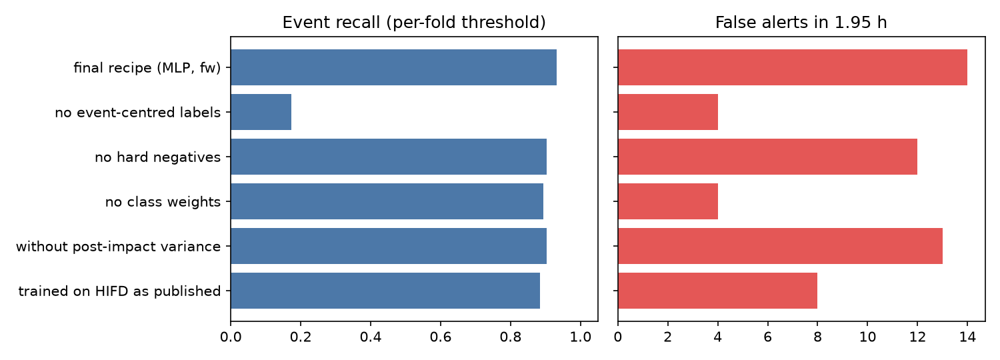

1. Giới thiệu
Ở người cao tuổi, té ngã là nguyên nhân chấn thương hàng đầu, và yếu tố quyết định hậu quả thường không phải là cú ngã mà là khoảng thời gian nằm một mình sau đó. Một thiết bị đeo rẻ tiền, tự phát hiện và tự báo động ngay tại chỗ có thể rút khoảng thời gian đó xuống vài chục giây.
Khó khăn thực sự không phải là bắt được cú ngã mà là không báo nhầm. Trong thí nghiệm của chúng tôi trên dữ liệu công khai, ngưỡng gia tốc đơn thuần 25 m/s² bắt 104/104 ca ngã nhưng sinh 98,3 báo nhầm mỗi giờ sinh hoạt: vỗ tay, ngồi phịch xuống ghế, đặt mạnh tay xuống bàn đều vượt ngưỡng. Ở đầu kia, máy trạng thái luật kinh điển "rơi tự do → va đập → bất động" mà firmware ban đầu của chúng tôi dùng chỉ phát hiện 6/104 ca ngã, vì trên dữ liệu thật người ngã vẫn tiếp tục cử động sau va đập. Thiết bị báo nhầm vài chục lần mỗi giờ sẽ bị tháo ra sau một ngày; thiết bị chỉ báo khi nạn nhân nằm bất động hoàn toàn thì bỏ sót gần hết.
Bio-Band lấp khoảng trống này bằng một bộ phân loại TinyML chạy hoàn toàn trên vi điều khiển, kết hợp với máy trạng thái luật theo cơ chế "hai bằng chứng". Toàn bộ chuỗi phát hiện — cảm biến, đặc trưng, hai mô hình, máy trạng thái, còi — chạy trên chip và không phụ thuộc mạng.
Đóng góp chính của nhóm:
- TinyML đầu-cuối trên ESP32-S3: tổ hợp MLP 705 tham số (float) và CNN 1D int8 1 761 tham số (49 200 phép nhân-cộng), chạy 0,42 ms + 4,2 ms mỗi 0,5 giây (dưới 1 % thời gian CPU), kèm quy trình tự động từ dữ liệu đến header C, self-test khi khởi động và kiểm chứng hardware-in-the-loop.
- Mô phỏng chuỗi xử lý của firmware trên dữ liệu công khai: dựng lại gia tốc thô có trọng lực từ quaternion rồi cho đi qua đúng bộ lọc, giới hạn dải đo và bộ lọc loại trọng lực của chip. Nhờ đó đo được và thu hẹp được khoảng cách miền (92 → 98 trên 104 ca ngã).
- Gán nhãn theo sự kiện cho các bản ghi ngã, yếu tố quyết định nhất trong toàn bộ công thức: bỏ nó đi, tỉ lệ phát hiện rơi từ 97/104 xuống 18/104.
- Giao thức đánh giá trung thực: leave-one-subject-out trên 21 người, đơn vị đánh giá là sự kiện và số báo nhầm mỗi giờ chứ không phải độ chính xác theo cửa sổ, kèm khoảng tin cậy Wilson/Poisson, ablation và so sánh với ngưỡng đơn, luật, học máy cổ điển và CNN nhiều kích cỡ.
- Máy trạng thái lai luật + AI với công tắc runtime, cộng với một nghiên cứu quyết định (lưới ứng viên, chọn ngưỡng lồng nhau theo người, bootstrap theo người, stress-test "một mô hình hỏng") để chọn cấu hình cuối cùng được nạp.
- An toàn và bảo mật theo thiết kế: MQTT chỉ publish (không nhận bất kỳ lệnh nào), lệnh HTTP bắt buộc header riêng và không phát CORS, mật khẩu điểm truy cập dẫn xuất từ địa chỉ MAC; kèm bộ công cụ tái lập và kiểm thử tự động.
Chúng tôi cũng nêu rõ điều ngược lại: nhóm không thu thập dữ liệu trên người tham gia. Mọi con số huấn luyện và đánh giá lấy từ bộ dữ liệu công khai HIFD; phần thử trên cổ tay thật chỉ gồm 5 lần ngã xuống nệm của một người và được trình bày đúng như vậy — một phép kiểm tra hợp lý, không phải một chỉ số.
2. Bối cảnh
Các hệ phát hiện té ngã bằng cảm biến quán tính thường thuộc ba nhóm: ngưỡng gia tốc đơn, máy trạng thái luật nhiều pha, và học máy trên đặc trưng cửa sổ. Chúng tôi hiện thực và đo cả ba trên cùng một bộ dữ liệu, cùng một giao thức (mục 5), thay vì so sánh với các con số công bố ở nơi khác — vì những con số đó thường dùng bộ dữ liệu khác, vị trí đeo khác và nhất là đơn vị đánh giá khác (độ chính xác theo cửa sổ thay vì theo sự kiện). Một mô hình đạt 99 % độ chính xác theo cửa sổ vẫn có thể báo nhầm hàng chục lần mỗi giờ, nên so sánh trực tiếp với các số liệu đó sẽ không trung thực.
Dữ liệu dùng ở đây là HIFD [1]: nhịp tim và cảm biến quán tính đeo ở cổ tay trái — cùng vị trí với Bio-Band — của 21 người, 50 Hz. Chọn một bộ dữ liệu cổ tay là có chủ ý: phần lớn dữ liệu té ngã công khai đặt cảm biến ở thắt lưng hoặc túi quần, nơi tín hiệu sạch hơn hẳn cổ tay, vốn chịu thêm toàn bộ chuyển động của bàn tay. Đánh giá chéo với bộ dữ liệu thứ hai (WEDA-FALL, SisFall) và thu dữ liệu từ chính thiết bị nằm ngoài phạm vi bài này (mục 7).

3. Thiết kế hệ thống
3.1. Phần cứng
Vòng tay dùng mô-đun ESP32-S3 Super Mini (4 MB flash, 2 MB PSRAM, WiFi 2,4 GHz). Cảm biến quán tính MPU6050 (±16 g, ±2000 °/s) đọc ở 50 Hz; cảm biến PPG GY-MAX30100 đo nhịp tim và SpO2; màn hình OLED SSD1306 0,96"; một còi active và một nút nhấn tạo giao diện cảnh báo và hủy. Ba thiết bị I²C dùng chung bus GPIO8/GPIO9 ở 100 kHz. Do đặc điểm mạch đã hàn, GPIO1, GPIO2 (nút) và GPIO3 (còi) nối chung một net: firmware chỉ chiếm chân còi khi đang kêu và thả về trở kháng cao khi im lặng, để nút vẫn kéo được net xuống mức thấp. Nguồn dự kiến là pin LiPo nạp qua TP4057; pin và cầu phân áp đo điện áp chưa được hàn, nên thiết bị hiện chạy bằng USB và chưa có số liệu thời lượng dùng.
3.2. Firmware
Firmware viết bằng C++ trên Arduino-ESP32 (PlatformIO), phiên bản hiện tại 2.2-c6, chiếm khoảng 983 KB flash (75 % phân vùng ứng dụng) và 16,6 % RAM. Hai lõi được phân vai rõ ràng: Core 1 chạy vòng cảm biến 50 Hz (MPU6050, MAX30100, máy trạng thái, AI, còi, OLED), Core 0 chạy WiFi, HTTP và MQTT; hai lõi trao đổi qua mutex và một hàng đợi lệnh. Nhờ cách phân chia này, mất mạng không ảnh hưởng đến khả năng phát hiện và báo động.
Chuỗi xử lý quán tính trong firmware: hiệu chỉnh độ lệch gyro lúc khởi động → bộ lọc số 21 Hz trong MPU6050 → giới hạn ±16 g và ±2000 °/s → loại trọng lực bằng bộ lọc thông thấp bậc nhất (α = 0,98) → bộ đệm trượt 100 × 6 mẫu (2 giây), trượt 25 mẫu (0,5 giây). Mỗi lần bộ đệm đủ, chip tính 42 đặc trưng cho MLP và chuẩn bị 7 kênh × 100 mẫu cho CNN.
3.3. Máy trạng thái và các đường kích hoạt
Trạng thái hệ thống đi theo chuỗi IDLE → FREE_FALL → IMPACT → COUNTDOWN (10 s) → ALARM, cộng với PANIC_SOS khi giữ nút 3 giây. Nhấn nút trong lúc đếm ngược hoặc báo động sẽ hủy và đưa hệ về IDLE ngay. Có bốn cách để vào COUNTDOWN, tóm tắt ở Bảng 1.
| Đường | Điều kiện | Khi nào hoạt động |
|---|---|---|
| Luật gốc | rơi tự do hoặc va đập ≥ 25 m/s², sau đó bất động 3 s (phương sai < 0,08) | luôn luôn |
| A | p ≥ 0,87 | chế độ AI bật |
| A′ | max(MLP, CNN) ≥ 0,95 và đang ở FREE_FALL/IMPACT và cửa sổ AI còn mới (≤ 600 ms) | chế độ AI bật |
| B | luật hiệu chỉnh (ổn định 1,5 s, cửa sổ 2 s, phương sai < 0,8) và AI đã thấy p ≥ 0,5 trong 6 s gần nhất | chế độ AI bật |
Ba đường AI dùng chung một cooldown 30 giây. Ý tưởng chung là hai bằng chứng: hoặc cả hai mô hình cùng chắc chắn (đường A), hoặc một mô hình rất chắc chắn kèm bằng chứng cơ học của một cú va đập (đường A′), hoặc bằng chứng cơ học về tư thế bất động kèm sự ủng hộ của AI (đường B). Lý do chọn đúng ba đường AI này, và lý do đường A′ được thêm vào, nằm ở mục 4.6 và 5.3.
Báo động bằng AI là công tắc runtime, mặc định TẮT và lưu trong NVS. Khi tắt, AI vẫn tính và gửi xác suất lên dashboard nhưng không được phép kích báo động; chỉ đường luật gốc làm việc đó. Đây là một quyết định an toàn có chủ ý: các con số trong bài đo trên dữ liệu công khai, chưa phải trên người đeo Bio-Band (mục 6).
3.4. Kết nối, dashboard và bảo mật
Thiết bị chạy ở chế độ STA; nếu không vào được mạng, nó phát điểm truy cập BioBand-Setup với mật khẩu dẫn xuất từ địa chỉ MAC và một trang /wifi để nhập thông tin mạng, lưu vào NVS rồi khởi động lại — đổi WiFi không cần nạp lại firmware. Dashboard LAN nhúng thẳng trong firmware và phục vụ từ cùng origin. Ba biện pháp bảo mật đáng nêu, tất cả đều là lựa chọn thiết kế chứ không phải cấu hình mặc định:
- MQTT chỉ publish. Thiết bị gửi telemetry, lịch sử, trạng thái và cảnh báo lên broker nhưng không subscribe bất kỳ topic lệnh nào. Broker công khai không xác thực, nên ai biết tên topic cũng gửi được lệnh nếu có; khả năng hủy báo động, xóa dữ liệu hay đổi ngưỡng từ xa vì vậy đã bị loại hoàn toàn khỏi mã.
- Chống CSRF cho HTTP. Mọi lệnh ghi phải mang header
X-Bioband, và máy chủ không phát header CORS nào, nên trang web ở origin khác không đọc được dữ liệu và không gửi được lệnh. Một phép tự kiểm tra chạy ngay trên chip xác nhận 11/11 trường hợp: thiếu header bị từ chối 403, có header được chấp nhận 200, phản hồi không chứa header CORS. - Quyền riêng tư dữ liệu sức khỏe. Broker công khai nghĩa là telemetry có thể bị người khác đọc. Chúng tôi coi broker riêng có TLS và xác thực là điều kiện bắt buộc cho mọi triển khai thật, cũng là yêu cầu của quy định về bảo vệ dữ liệu cá nhân [2].
4. Phương pháp AI
4.1. Dữ liệu
Chúng tôi dùng HIFD [1]: 21 người (13 nam, 8 nữ), cảm biến cổ tay trái, 50 Hz, 349 bản ghi (381 394 mẫu) gồm 104 bản ghi ngã và 245 bản ghi sinh hoạt (đi bộ, cầu thang, nằm giường, ngồi ghế, vỗ tay, ăn, chải tóc, đánh răng, mặc áo, đi giày, kéo khóa, rửa tay, viết). Dữ liệu công bố gồm gia tốc đã loại trọng lực, vận tốc góc và quaternion. Nhóm không thu thập dữ liệu từ người tham gia nào; toàn bộ phần huấn luyện và đánh giá định lượng dựa trên bộ dữ liệu công khai này.
4.2. Mô phỏng chuỗi xử lý của firmware
Đây là điểm mà phần lớn công trình dùng dữ liệu công khai bỏ qua, và là một đóng góp chính của nhóm. Firmware không nhìn thấy tín hiệu như bộ dữ liệu công bố: chip nhận gia tốc thô, có trọng lực, đã qua bộ lọc 21 Hz của MPU6050, bị cắt ở ±16 g, rồi tự loại trọng lực bằng bộ lọc bậc nhất có hằng số thời gian ≈ 1 s, trong khi HIFD đã loại trọng lực theo cách khác. Huấn luyện trên tín hiệu công bố rồi nạp mô hình vào chip là làm việc với hai phân phối khác nhau.
Công cụ tiền xử lý của chúng tôi dựng lại đúng chuỗi của chip: (1) cộng lại vector trọng lực trong hệ cảm biến từ quaternion, gs = RT[0, 0, g]; (2) lọc thông thấp 21 Hz, cắt ±16 g và ±2000 °/s, rồi loại trọng lực bằng đúng bộ lọc α = 0,98 của firmware; (3) tùy chọn tăng cường bằng xoay ngẫu nhiên hệ trục ±30° và cộng độ lệch zero-rate của gyro ±0,15 rad/s. Quy ước quaternion của HIFD không được tài liệu hóa, nên chúng tôi xác định nó bằng cách so đạo hàm của vector trọng lực với −ω × g suy từ gyro: cosin trung vị −0,50 cho giả thuyết world→body so với 0,03 cho chiều ngược lại. Kết luận đó không tuyệt đối chắc chắn, và chính vì vậy phần tăng cường xoay đóng vai trò bảo hiểm.
Hiệu quả đo được rất rõ: cùng kiến trúc MLP, cùng giao thức đánh giá, huấn luyện trên tín hiệu công bố cho 92/104 ca ngã, trên tín hiệu qua chuỗi firmware cho 97/104, thêm tăng cường cho 98/104.
4.3. Gán nhãn theo sự kiện
Mỗi bản ghi ngã dài 15–20 giây nhưng cú ngã chỉ chiếm 1–2 giây. Gán nhãn "ngã" cho mọi cửa sổ của bản ghi sẽ dạy mô hình rằng đoạn đứng yên trước và nằm yên sau — về vật lý giống hệt nằm giường hay ngồi ghế — cũng là ngã. Chúng tôi định tâm nhãn quanh va đập:
mag[i] = |atuyến tính|; p = argmax(trung bình trượt 5 mẫu của mag)
cửa sổ "ngã": |tâm cửa sổ − p| ≤ 1,0 s
cửa sổ "sinh hoạt": nằm hoàn toàn ngoài p ± 1,5 s
vùng đệm 1,0–1,5 s: loại bỏ
Quy tắc chỉ áp dụng cho bản ghi ngã (đã kiểm tra cả 104 bản ghi đều chứa đúng một cú ngã) và không tạo nhãn "ngã" mới nào. Ablation (mục 5.2) cho thấy đây là yếu tố quyết định nhất của công thức.
4.4. Đặc trưng và hai mô hình
MLP-42. 42 đặc trưng thống kê trên cửa sổ 2 giây: trung bình, độ lệch chuẩn, min, max, rms và trung bình trị tuyệt đối cho 6 trục; cộng trung bình, độ lệch chuẩn, min, max, đỉnh và phương sai 0,5 giây cuối của độ lớn gia tốc. Kiến trúc 42 → 16 (tanh) → 1 (sigmoid), 705 tham số, tính bằng số thực trên chip.
CNN 1D int8. Đầu vào 7 kênh × 100 mẫu (6 trục cộng độ lớn gia tốc), kiến trúc Conv(7→8, k5, s2) → Conv(8→16, k5, s2) → Conv(16→16, k3) với ReLU, gộp max và mean theo thời gian, rồi Dense → sigmoid: 1 761 tham số, 49 200 phép nhân-cộng. Lượng tử hóa sau huấn luyện: trọng số int8 theo kênh, kích hoạt int8 theo lớp (hiệu chuẩn bằng bách phân vị 99,9). Nhân tính toán trên chip là bản sao từng bước của bộ lượng tử hóa phía Python; sai lệch xác suất trung bình giữa bản float và bản int8 là 0,0015.
Tổ hợp. Hai mô hình nhìn tín hiệu theo hai cách khác nhau: MLP nhìn thống kê toàn cửa sổ, CNN nhìn hình dạng theo thời gian. Xác suất tổ hợp là trung bình cộng; quyết định "ngã" khi ≥ 0,87. Tổng cộng 2 466 tham số, dưới 5 KB trọng số trong flash.
4.5. Giao thức đánh giá
Chia dữ liệu. Leave-one-subject-out trên 21 người: mỗi lần giữ lại một người để kiểm tra, ba người khác (cố định theo hạt giống) để dừng sớm, 17 người còn lại để huấn luyện; mỗi mô hình chạy 3 hạt giống và lấy trung bình điểm.
Đơn vị đánh giá là sự kiện, không phải cửa sổ. Một ca ngã tính là phát hiện nếu có cảnh báo với tâm cửa sổ trong ±2 giây quanh va đập; mọi cảnh báo khác là báo nhầm, và các cảnh báo cách nhau dưới 3 giây được gộp làm một, rồi quy ra số lần mỗi giờ. Khoảng tin cậy 95 % tính bằng Wilson cho tỉ lệ phát hiện và Poisson chính xác cho tần suất báo nhầm. Đánh giá chỉ-AI chạy trên 1,9455 giờ cửa sổ hợp lệ; đánh giá ở mức hệ thống (có mô phỏng máy trạng thái) chạy trên 1,8011 giờ.
Chọn ngưỡng. Ngưỡng của tổ hợp là ngưỡng cao nhất còn giữ tỉ lệ phát hiện ≥ 95 % với không quá 1 báo nhầm, chọn trên điểm số ngoài mẫu gộp của 21 người. Vì ngưỡng chọn trên chính tập dùng để báo cáo, điểm vận hành này hơi lạc quan; mục 4.6 khắc phục bằng cách chọn ngưỡng lồng nhau.
4.6. Nghiên cứu quyết định cấu hình cuối cùng
Sau khi huấn luyện xong, chúng tôi tự đặt một ràng buộc: không thu thêm dữ liệu và không huấn luyện lại; chỉ được đổi cách kết hợp hai xác suất đã có với đường luật và các hằng số ngưỡng. Lưới ứng viên gồm 384 cấu hình thuộc 11 họ: AI tắt hoàn toàn, giữ nguyên hiện trạng (C1), quét ngưỡng trung bình, dùng max, trung bình có trọng số, dùng min, thêm đường "một mô hình mạnh kèm va đập" (C6), thắt chặt đường B bằng max (C7), và dùng từng mô hình đơn.
Mỗi ứng viên qua bốn phép thử: (1) chọn ngưỡng lồng nhau theo người — với mỗi người giữ lại, ngưỡng chọn trên 20 người còn lại rồi mới áp lên người giữ lại, và chỉ con số lồng nhau này được báo cáo; (2) bootstrap theo người (1 000 lần lấy lại, so từng cặp với C1); (3) stress-test "một mô hình hỏng": ép điểm của MLP (rồi của CNN) về 0 trên các bản ghi ngã và đo tỉ lệ phát hiện còn lại; (4) chấm lại ngoại tuyến các log thiết bị thật. Tiêu chí chấp nhận định trước: báo nhầm không vượt mức của C1 cộng một, tỉ lệ phát hiện không kém C1 quá một ca, sau đó tối đa hóa độ bền khi một mô hình hỏng, và khi hòa thì chọn cấu hình ít hằng số thay đổi hơn.
5. Kết quả và đánh giá
5.1. Kết quả ngoại tuyến trên 21 người
Bảng 2 và Hình 2 cho ba kết luận. Thứ nhất, ở vùng ngân sách báo nhầm thấp — vùng duy nhất mà một thiết bị đeo thực sự dùng được — tổ hợp hai mô hình nhỏ vượt mọi mô hình đơn: 0,962 ở ≤ 1 báo nhầm/giờ so với 0,942 của MLP và 0,904 của CNN. Thứ hai, kích thước không mua được chất lượng: CNN 6 337 tham số không hơn CNN 1 761 tham số, còn các mô hình học máy cổ điển sụp đổ hoàn toàn ở ngân sách thấp dù vẫn khá ở mức 5 báo nhầm/giờ. Thứ ba, huấn luyện trên tín hiệu qua chuỗi firmware cải thiện rõ (0,865 → 0,913 ở ≤ 2 báo nhầm/giờ), và tăng cường xoay/độ lệch gyro cải thiện thêm (→ 0,942).
Giới hạn thống kê cần nêu kèm: với 104 ca ngã và khoảng 1,9 giờ dữ liệu sinh hoạt, chênh lệch dưới ~3 ca ngã hoặc ~2 báo nhầm không có ý nghĩa thống kê, nên thứ hạng giữa các biến thể gần nhau chỉ mang tính gợi ý.
| Mô hình | Tham số | Seed | @ ≤1/h | @ ≤2/h | @ ≤5/h | Ngưỡng theo fold | Báo nhầm/h |
|---|---|---|---|---|---|---|---|
| Hồi quy logistic (42 đặc trưng) | 43 | 1 | 0,000 | 0,000 | 0,913 | 93/104 (0,82–0,94) | 4,6 |
| Cây quyết định (độ sâu 6) | – | 1 | 0,000 | 0,000 | 0,529 | 60/104 (0,48–0,67) | 3,6 |
| Random forest (60 cây) | – | 1 | 0,837 | 0,875 | 0,904 | 70/104 (0,58–0,76) | 4,6 |
| MLP-42, huấn luyện trên HIFD nguyên bản | 705 | 1 | 0,827 | 0,865 | 0,923 | 92/104 (0,81–0,93) | 4,1 |
| MLP-42, dữ liệu qua chuỗi firmware | 705 | 1 | 0,846 | 0,913 | 0,962 | 97/104 (0,87–0,97) | 7,2 |
| MLP-42, chuỗi firmware + tăng cường | 705 | 3 | 0,942 | 0,942 | 0,971 | 98/104 (0,88–0,97) | 5,1 |
| MLP-30, đặc trưng bất biến theo hướng | 513 | 1 | 0,904 | 0,923 | 0,971 | 97/104 (0,87–0,97) | 1,0 |
| CNN 1D nhỏ (4-8-8) | 529 | 1 | 0,000 | 0,000 | 0,923 | 91/104 (0,80–0,93) | 3,6 |
| CNN 1D (8-16-16), chuỗi firmware | 1 761 | 3 | 0,885 | 0,933 | 0,990 | 98/104 (0,88–0,97) | 4,1 |
| CNN 1D (8-16-16) + tăng cường | 1 761 | 3 | 0,904 | 0,933 | 0,990 | 100/104 (0,91–0,98) | 5,1 |
| CNN 1D lớn (16-32-32) | 6 337 | 1 | 0,000 | 0,000 | 0,933 | 98/104 (0,88–0,97) | 5,1 |
| Tổ hợp MLP + CNN | 2 466 | 3+3 | 0,962 | 0,971 | 0,981 | xem mục 5.3 | – |


5.2. Mốc so sánh bằng luật và ablation
| Luật | Ca ngã | Báo nhầm | Báo nhầm/h | Trễ trung vị |
|---|---|---|---|---|
| Ngưỡng ≥ 25 m/s² đơn thuần | 104/104 | 177 trong 1,80 h | 98,3 | 0,08 s |
| FSM firmware, hằng số gốc | 6/104 | 14 trong 1,80 h | 7,8 | 6,38 s |
| FSM hiệu chỉnh (người 16–21) | 31/31 | 9 trong 0,50 h | 18,1 | 3,4 s |
Bảng 3 định lượng vấn đề nêu ở mục 1 và chứa một phát hiện mà chúng tôi coi là có giá trị độc lập với sản phẩm: điều kiện "bất động sau va đập" của máy trạng thái luật kinh điển gần như không bao giờ thỏa trên dữ liệu ngã thật. Phương sai của độ lớn gia tốc trong khoảng 0,2–3,2 giây sau va đập có trung vị 3,7 (m/s²)²; chỉ 1 % số ca ngã xuống dưới ngưỡng 0,08 của luật gốc, trong khi 12 % các đoạn sinh hoạt 3 giây lại nằm dưới ngưỡng đó — luật gốc vừa bỏ sót ngã vừa nhận nhầm sinh hoạt. Điều này đúng với ngã mô phỏng, khi người tham gia tự đứng dậy; với người bất tỉnh thật, điều kiện bất động có thể phù hợp hơn, và vì dữ liệu không kiểm chứng được điều đó nên đường luật vẫn được giữ trong firmware.

Hình 4 trả lời câu hỏi "thành phần nào thực sự quan trọng". Câu trả lời rất lệch: chỉ gán nhãn theo sự kiện là quyết định (97/104 → 18/104 khi bỏ). Trọng số hard-negative cho giường/ghế, trọng số lớp và đặc trưng phương sai 0,5 giây cuối đều cho chênh lệch 3–4 ca ngã, tức nằm trong nhiễu. Chúng tôi báo cáo cả ba thay vì chỉ báo cáo thành phần có lợi.
5.3. Cấu hình cuối cùng: vì sao thêm đường A′
Cấu hình đang chạy trước nghiên cứu quyết định (gọi là C1: đường A + đường B) đạt 102/104 ca ngã (CI 95 % 0,933–0,995) với 1 báo nhầm trong 1,801 giờ (0,56/h, giới hạn trên Poisson 95 % là 3,09/h), trễ trung vị 0,26 giây. Con số thường được trích "99/104, 0 báo nhầm" chỉ là của riêng đường A, không có máy trạng thái; đường B cứu thêm 3 ca ngã và tốn đúng 1 báo nhầm (một lần vỗ tay).
Điều khiến chúng tôi không dừng ở C1 là một quan sát trên cổ tay thật. Trên HIFD hai mô hình gần như luôn đồng ý: chỉ 1 trong 104 bản ghi ngã có đỉnh xác suất lệch nhau quá 0,5. Trên 6 sự kiện ghi được từ cổ tay thật, 3 sự kiện lệch quá 0,5 (kiểm định chính xác Fisher, p = 3,6·10⁻⁴). Một phép kiểm tra độc lập chỉ-đọc đã loại trừ nguyên nhân kỹ thuật: không có lệch thứ tự trục, lệch dấu, lệch đơn vị, lệch hằng số chuẩn hóa hay lệch bố cục cửa sổ giữa firmware và pipeline huấn luyện; nguyên nhân còn lại là lệch miền. Hệ quả thực tế: cơ chế lấy trung bình của C1 theo thiết kế không thể báo động khi một mô hình mù, vì trung bình của 0 và 1 là 0,5, nằm dưới mọi ngưỡng của C1.
| Tiêu chí | C1 (A + B) | C6 = C1 + đường A′ (đã nạp) |
|---|---|---|
| Ca ngã, 21 người (lồng nhau) | 102/104 (0,933–0,995) | 102/104 (0,933–0,995) |
| Báo nhầm trong 1,801 h | 1 → 0,56/h (cận trên 3,09) | 2 → 1,11/h (cận trên 4,01) |
| Nhóm sạch (người 16–21) | 31/31 • 1 báo nhầm | 31/31 • 1 báo nhầm |
| Trễ trung vị | 0,26 s | 0,20 s |
| Bootstrap theo người so với C1 | – | Δphát hiện 0,000 (0/1000 lần xấu hơn); ΔFA +1,06 (CI 0 … +3) |
| Stress: MLP hỏng / CNN hỏng | 0 / 0 | 96 / 97 trên 104 |
| Số hằng số phải đổi | 0 | 1 (AI_SINGLE_P = 0,95) |
Đường A′ (một mô hình ≥ 0,95 và máy trạng thái đang ở FREE_FALL/IMPACT) được chọn sau khi so sánh toàn bộ lưới. Kết quả nằm ở Bảng 4. Trên HIFD, A′ không bắt thêm ca ngã nào — đúng như dự đoán, vì trên bộ dữ liệu này hai mô hình luôn đồng ý — và hiệu tỉ lệ phát hiện so với C1 bằng 0,000 trong cả 1 000 lần bootstrap, không lần nào xấu hơn. Giá phải trả là đúng một báo nhầm, và báo nhầm đó nằm hoàn toàn ở nhóm người 1–15; ở nhóm 16–21, nhóm duy nhất mà tham số máy trạng thái không được chỉnh trên đó, A′ không tốn thêm gì. Toàn bộ giá trị của A′ nằm ở cột stress-test: khi một mô hình hỏng hẳn, cấu hình đã nạp giữ 96–97 trên 104 ca ngã, còn C1 giữ 0. Ngưỡng 0,95 được chọn lại độc lập trong cả 21/21 fold, và cấu hình không nhạy với ngưỡng (số báo nhầm giữ nguyên bằng 2 cho mọi giá trị trong khoảng 0,95–0,99).
Các ứng viên khác đều bị loại: thắt chặt đường B bằng max (C7) hóa ra chặt hơn chứ không lỏng hơn khi cả hai mô hình ở mức trung bình, nên kém C1 ở 89,5 % số lần bootstrap; đổi toàn cục bộ kết hợp sang max (C3) mất 2 ca ngã và tốn 4 báo nhầm; bỏ hẳn MLP để chỉ dùng CNN cho 5 báo nhầm và 0 ca ngã khi CNN hỏng; các biến thể chỉ đổi ngưỡng tốn thêm một báo nhầm mà vẫn 0 ở stress-test.
Một điểm căng thẳng trong chính tiêu chí của chúng tôi cần được ghi lại: nếu đọc ngân sách báo nhầm theo nghĩa tuyệt đối ("không quá 1"), thì C1 đã dùng hết ngân sách và kết luận đúng phải là giữ C1. Con số tuyệt đối đó được viết khi chúng tôi còn tưởng C1 có 0 báo nhầm; khi tiền đề đổ, mệnh đề còn hiệu lực là mệnh đề tương đối. Vì tranh luận này chưa khép lại bằng dữ liệu, thay đổi được thiết kế để lùi lại bằng một hằng số duy nhất: đặt AI_SINGLE_P = 2,0 khôi phục chính xác C1.
5.4. Kiểm chứng trên phần cứng thật
| Phép thử | Kết quả |
|---|---|
| Self-test khi khởi động (6 cửa sổ cố định) | PASS, chip khớp tham chiếu numpy (sai lệch < 10⁻⁴) |
| Hardware-in-the-loop: 1 942 cửa sổ của người 19–21 gửi qua USB vào chip | sai lệch tối đa MLP 1,2·10⁻⁶, CNN 1,6·10⁻⁴; 0 quyết định lệch; theo sự kiện trên chip: 14/15 ca ngã, 1 báo nhầm (vỗ tay) trong 0,27 h, trễ trung vị 0,16 s — trùng khít kết quả tham chiếu |
| Phát lại bản ghi thật vào firmware 2.2-c6 ở 50 Hz (9 bản ghi: 5 ngã + 4 sinh hoạt; cấu hình C6, AI bật) | Ca ngã vào đếm ngược 5/5 (bốn ca qua đường A, ca s21/fall3 qua đường luật B). Sinh hoạt: s19 vỗ tay, s19 nằm giường, s19 đi bộ đều không báo. s20/non-fall/clap là bản ghi duy nhất từng báo nhầm và kết quả đổi giữa 4 lần chạy lặp (không báo; báo qua đường A′; không báo; báo qua đường B) vì jitter thời gian phát lại đẩy aiMax6s quanh ngưỡng hỗ trợ 0,5. Tham chiếu AI tắt: 0/5 ca ngã, 2/4 bản ghi sinh hoạt báo nhầm |
| Phát lại ban đầu (replay.json, 2026-11-02, firmware C1, cấu hình C1) | AI bật: 5/5 ca ngã, 1/4 bản ghi sinh hoạt báo nhầm (vỗ tay). AI tắt: 0/5 ca ngã, và 2/2 lần vỗ tay báo nhầm |
| Tự kiểm tra bảo mật HTTP trên chip | 11/11 phép thử đạt (403 khi thiếu header, 200 khi có, không có header CORS) |
| Vòng lặp | 50 fps ổn định; độ trễ tối đa giữa hai vòng 35 ms mỗi 0,5 giây do làm mới OLED qua I²C |
| Kiểm thử tự động | 8 phép thử pytest, chạy cùng bản build firmware trong CI GitHub Actions |
Phép thử quan trọng nhất trong Bảng 5 là hardware-in-the-loop: toàn bộ 1 942 cửa sổ thật của ba người giữ lại được gửi qua USB vào chip và so từng cửa sổ với tham chiếu Python, không cửa sổ nào cho quyết định khác nhau. Đây là bằng chứng rằng các con số ngoại tuyến ở mục 5.1–5.3 mô tả hành vi của thiết bị, chứ không chỉ của mô hình.
Tài nguyên và nhiệt. Mỗi 0,5 giây chip chạy một lần suy luận: MLP 0,42 ms và CNN 4,2 ms ở 160 MHz, dưới 1 % thời gian CPU. Bộ nhớ: cửa sổ 2,4 KB cộng đệm CNN khoảng 2 KB; trọng số dưới 5 KB flash. Ba mức xung được đo trên cùng một board, cùng nguồn USB, cùng tải WiFi + MQTT + OLED + AI, mỗi mức 6 phút: 80 MHz cho CNN 8,4 ms (chặn vòng lặp 20 ms) và 40,7 °C; 160 MHz cho 4,2 ms và 42,2 °C; 240 MHz cho 2,8 ms nhưng 57,7 °C và vẫn đang tăng. Vì AI đằng nào cũng chiếm dưới 2 % CPU, 240 MHz chỉ mua thêm 15 °C, nên mặc định là 160 MHz. (Cảm biến nhiệt trong ESP32-S3 thô — bước ~1 °C, sai số tuyệt đối vài °C — nên chỉ so sánh được giữa các lần đo cùng điều kiện như ở đây.) Các biện pháp tiết kiệm điện khác: modem sleep cho WiFi, OLED làm mới 2 Hz ở màn hình thường.
5.5. Thử trên cổ tay thật: kiểm tra hợp lý, không phải chỉ số
Một người trong nhóm đã đeo Bio-Band và ngã xuống nệm 5 lần, cộng 8,6 phút đeo yên tĩnh có ghi log. Phần này không phải một phép đo: n = 5, một người, một loại nệm, và chỉ 4 trong 5 lần chạy với báo động AI đang bật. Khoảng tin cậy Wilson của 3/5 là 0,23–0,88 và của 5/5 là 0,57–1,00, trùm lên nhau, nên mọi so sánh giữa các cấu hình dựa trên 5 lần ngã đều vô nghĩa về thống kê, và chúng tôi không dùng chúng để chọn cấu hình.
Điều phép thử này có cho thấy: (a) toàn bộ chuỗi cảm biến → AI → máy trạng thái → đếm ngược → hủy bằng nút chạy được trên người thật; (b) đường B cứu được ca ngã nằm yên; (c) hai mô hình bất đồng mạnh ở 4/5 ca ngã, với độ lệch hai xác suất lên tới 1,00 / 0,97 / 0,84 / 0,58 (ví dụ một ca cho MLP 0,00 trong khi CNN 1,00, một ca khác cho MLP 0,98 trong khi CNN 0,15) — hiện tượng mà bộ dữ liệu công khai không hề để lộ, và theo phép đếm chặt hơn ở mục 5.3 là 3/6 sự kiện; (d) trong 8,6 phút đeo yên tĩnh, xác suất tối đa 0,003 và không có báo nhầm — nhưng 8,6 phút chỉ cho giới hạn trên khoảng 20,8 lần/giờ, tức bằng chứng về báo nhầm từ thiết bị thật bằng không.
5.6. Nhịp tim và SpO₂
Đường PPG dùng MAX30100 ở 100 Hz với bộ dò nhịp và bộ tính SpO2 của thư viện, cộng năm lớp lọc nhiễu do nhóm thêm vào: khóa PPG 800 ms khi có chuyển động, giới hạn chỉ số tưới máu 0,1–15 %, giới hạn sinh lý (HR 30–220, SpO2 70–100), trung vị 3 kết quả, và phát hiện lead-off khi tín hiệu hồng ngoại thô xuống thấp khoảng 1 giây. "Health guard" chỉ bắt đầu đánh giá sau 20 giây kể từ lúc đặt ngón tay.
Chúng tôi báo cáo đúng hai điều. Thứ nhất, một mô phỏng hậu xử lý (200 hạt giống) cho thấy chuỗi lọc này hạ sai số nhịp tim trung bình từ 4,72 xuống 1,65 bpm và hạ tỉ lệ bước nhảy quá 10 bpm từ 13,7 % xuống 2,1 % — đây là mô phỏng bộ lọc, không phải đo phần cứng. Thứ hai, phép đo thật trên thiết bị cho HR 55–76 bpm, SpO2 96–97 % và chỉ số tưới máu 1,5–3,5 % khi đặt ngón tay. Chưa có so sánh với máy đo tham chiếu, nên chưa nói được gì về độ chính xác; ngoài ra MAX30100 vốn để đo ở đầu ngón tay, đo ở cổ tay chưa được kiểm chứng.
6. Thảo luận và hạn chế
Phần này nêu chủ động những gì công trình không chứng minh được.
Lệch miền là hạn chế lớn nhất. Mô hình học từ người trẻ diễn tập ngã, với cảm biến và cách đeo khác Bio-Band, nên mọi tỉ lệ phát hiện và báo nhầm trong bài là ước lượng trên dữ liệu công khai. Chúng tôi đã đo và thu hẹp được một phần khoảng cách này (mục 4.2), nhưng phần còn lại thì chưa: trên cổ tay thật hai mô hình bất đồng với tần suất cao hơn hẳn (Fisher p = 3,6·10⁻⁴) và nguyên nhân kỹ thuật đã bị loại trừ. Đó chính là lý do báo động bằng AI mặc định tắt.
Mẫu nhỏ. 104 ca ngã và chưa tới 2 giờ dữ liệu sinh hoạt: khoảng tin cậy rộng (0,933–0,995 cho tỉ lệ phát hiện của cấu hình đã nạp), và 1,8 giờ chỉ phân giải được tần suất báo nhầm ở mức khoảng 0,5 lần/giờ; 5 ca ngã thật cộng 8,6 phút sinh hoạt không bổ sung gì về thống kê. Do đó chúng tôi không công bố con số báo nhầm mỗi ngày: quy từ 1,8 giờ sinh hoạt "khó" (vỗ tay, ngồi phịch, giũ áo liên tiếp) sang 14 giờ thức là ngoại suy, không phải phép đo.
Rủi ro hướng gắn cảm biến, đã lượng hóa. Trên 1 792 cửa sổ sinh hoạt của ba người giữ lại, ở hướng gốc chỉ 0,056 % cửa sổ làm CNN vượt 0,9 (MLP: 0 %). Xoay hệ trục −90° quanh z, con số đó tăng lên 3,40 %, trong khi quy tắc trung bình ≥ 0,87 vẫn giữ 0,00 %: cấu hình C1 miễn nhiễm với kịch bản này còn đường A′ thì không, và CNN là mô hình nhạy hướng hơn. Cổng FREE_FALL/IMPACT cộng cooldown 30 giây cắt phần lớn rủi ro đó ở hướng gốc, nhưng mức giảm khi bị xoay thì chưa đo được. Dây đeo hiện chưa khóa được góc của MPU6050 — đây là việc phần cứng còn lại rõ ràng nhất.
Điểm vận hành hơi lạc quan và ngã mô phỏng khác ngã thật. Ngưỡng đã nạp chọn trên điểm số ngoài mẫu gộp; chúng tôi khắc phục bằng cách chỉ báo cáo con số lồng nhau ở mục 5.3, nhưng cấu hình nạp vào chip vẫn dùng ngưỡng chọn trên toàn bộ. Người ngã trong bộ dữ liệu tự đứng dậy; ca bất tỉnh, trượt chậm hoặc ngồi sụp có thể khó hơn, và một phép thử thay thế cho thấy khi giảm biên độ gia tốc còn một nửa (xấp xỉ ngã xuống nệm mềm), số ca phát hiện tụt từ 14/15 xuống 9/15.
Chưa có kiểm chứng lâm sàng và chưa hoàn thiện phần cứng. Bio-Band là sản phẩm nghiên cứu, không phải thiết bị y tế: không dùng để chẩn đoán và không thay thế giám sát của con người. Giá trị HR/SpO2 chưa so với máy tham chiếu. Pin và mạch đo điện áp chưa hàn nên chưa có số liệu thời lượng sử dụng. Broker MQTT hiện là broker công khai, chỉ phù hợp cho bản mẫu. Phép phát lại 9 bản ghi (5 ngã + 4 sinh hoạt) đã được chạy lại trên firmware 2.2-c6 đang nạp với AI bật (Bảng 5): 5/5 ca ngã báo động (bốn qua đường A, ca s21/fall3 qua đường luật B); s19 vỗ tay, s19 nằm giường và s19 đi bộ không báo, còn s20/non-fall/clap là bản ghi duy nhất từng báo nhầm và kết quả đổi giữa 4 lần chạy lặp (không báo, báo qua đường A′, không báo, báo qua đường B) vì jitter thời gian phát lại đẩy aiMax6s quanh ngưỡng hỗ trợ 0,5; tham chiếu khi tắt AI là 0/5 ca ngã và 2/4 bản ghi sinh hoạt báo nhầm. Phần còn thiếu cần nêu rõ: thử nghiệm có giám sát trên cổ tay với firmware 2.2-c6 chưa được thực hiện.
7. Kết luận và hướng phát triển
Chúng tôi đã xây dựng và đánh giá Bio-Band, một vòng đeo tay ESP32-S3 phát hiện té ngã bằng hai mô hình TinyML chạy hoàn toàn trên chip (2 466 tham số, 4,6 ms mỗi 0,5 giây) kết hợp với một máy trạng thái luật theo nguyên tắc hai bằng chứng. Đóng góp của nhóm nằm ở ba chỗ: mô phỏng chuỗi xử lý của firmware trên dữ liệu công khai để huấn luyện trên đúng tín hiệu mà chip sẽ thấy; gán nhãn theo sự kiện, thành phần quyết định của toàn bộ công thức; và một giao thức đánh giá theo sự kiện với leave-one-subject-out, số báo nhầm mỗi giờ, khoảng tin cậy, ablation, chọn ngưỡng lồng nhau, bootstrap và stress-test. Cấu hình đã nạp đạt 102/104 ca ngã với 2 báo nhầm trong 1,80 giờ sinh hoạt khó, giữ 96–97/104 khi một trong hai mô hình hỏng hoàn toàn, và được xác nhận chạy đúng trên phần cứng với 0 quyết định lệch trên 1 942 cửa sổ.
Việc tiếp theo, theo thứ tự ưu tiên: (1) thu dữ liệu từ chính Bio-Band — 3–5 người, ngã trên đệm có giám sát và có đồng ý, kèm vài giờ đeo sinh hoạt để lần đầu tiên đo được tần suất báo nhầm thật, rồi mới mở cổng cho báo động AI theo tiêu chí định trước; (2) hoàn thiện phần cứng: hàn pin và mạch đo điện áp, đo dòng tiêu thụ, và làm vỏ/dây đeo cố định hướng cảm biến để triệt rủi ro nêu ở mục 6; (3) đánh giá chéo với bộ dữ liệu công khai thứ hai; (4) broker riêng có TLS và kênh thông báo cho người thân.
Tài liệu tham khảo
- HIFD — Heart Rate & IMU sensor data for fall detection. Bộ dữ liệu công khai, công bố trên IEEE Access, 2020. Mã nguồn và dữ liệu:
https://github.com/nhoyh/HR_IMU_falldetection_dataset. [Điền: tên tác giả, tiêu đề đầy đủ bài báo, số tập/trang — kho mã của dự án chỉ ghi đến mức này.] - Nghị định 13/2023/NĐ-CP về bảo vệ dữ liệu cá nhân. [Điền: ngày ban hành và cơ quan ban hành nếu cần theo mẫu trích dẫn của cuộc thi.]
- Mã nguồn, dữ liệu kết quả và công cụ tái lập của Bio-Band:
https://github.com/vtt132109/vong-tay-thong-minh.